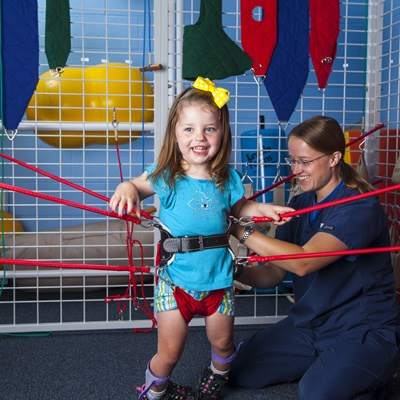

Zeynep Ceylan Özel Eğitim ve Rehabilitasyon Merkezi
Özel eğitimin temel amacı olan "çocuğa görelik" ilkesini benimseyerek çıktığımız bu yolda, eğitim kurumumuzun temel bakış açısı, her birey kendi içinde özeldir! misyonu en güçlü dayanağımızdır.
Yetkin öğreticiler ile Zeynep Ceylan Özel Eğitim ve Rehabilitasyon Merkezi sizlerle
Özel eğitim öğrencilerimiz ve aileleri ile işbirliği içinde yürütülecek eğitim faaliyetlerimizin bizi götürmesini istediğimiz sonuç öğrencinin gelişim hızını en üst seviye çıkarabilecek öğretim yöntem ve teknikleri kullanarak sosyal ve akademik alanda yaşıtlarıyla aynı platformu paylaşabilmelerini sağlamak.
Uzay Terapisi Zeynep Ceylan Özel Eğitim ve Rehabilitasyon Merkezi'nde
Uzay terapi fizik tedavi ve rehabilitasyon alanında son yıllarda geliştirilen ve serebral palsi, spina bifida, hidrosefali, west sendromu gibi pek çok nörolojik hastalıkta kullanılan bir tedavi metodudur.
Özel Zeynep Ceylan Özel Eğitim ve Rehabilitasyon Merkezi kurucusu Zeynep Ceylan 12/16 1980 yılında Ankara'da doğdu 2006 yılında okul öncesi öğretmenliği lisans programını tamamladı, Muğla'nın Fethiye ilçesinde birçok özel ve resmi kurumda çalışırken Özel Eğitim alan uzman öğreticisi, Türkçe prep ve Orff schulwerk gibi pek çok gelişim alanında eğitimler aldıktan sonra Zeynep Ceylan Özel Eğitim ve Rehabilitasyon Merkezini kurarak sektördeki kadın girişimciler içerisinde yerini aldı.
Misyon
Özel eğitimin temel amacı olan "çocuğa görelik" ilkesini benimseyerek çıktığımız bu yolda, eğitim kurumumuzun temel bakış açısı, her birey kendi içinde özeldir! misyonu en güçlü dayanağımızdır.
Vizyon
Özel eğitim öğrencilerimiz ve aileleri ile işbirliği içinde yürütülecek eğitim faaliyetlerimizin bizi götürmesini istediğimiz sonuç;
Çocuğu tanıyıp doğru değerlendirmeleri yaparak sosyal ve akademik alanda gerekli desteği sağlamak.
Sağlıklı ve sürdürülebilir bir eğitimin okul aile çocuk üçgeninde var olabileceğini inandığımız için aile eğitimleri ile eğitimin kalıcılığını genellemek.
Öğrencinin gelişim hızını en üst seviye çıkarabilecek öğretim yöntem ve teknikleri kullanarak sosyal ve akademik alanda yaşıtlarıyla aynı platformu paylaşa bilmelerini sağlamak.
Sürdürülebilir eğitimin en önemli unsurlarından biri olan personel eğitimi ve gelişiminin değerlendirmeler ve raporlarla her zaman ileri doğru yol almasını sağlamak.
Programlarımız
Özel Öğrenme Güçlüğü Destek Eğitimi
Çocuğun dinleme, konuşma, okuma, yazma, mantık yürütme, matematik ve sosyal beceriler alanlarında yaşıtlarına oranla belirgin bir farkının olması durumudur kurumumuzda özel öğrenme güçlüğü destek eğitim programına;
Özel eğitim öğretmenleri
Özel Eğitim uzman ögreticileri
Okul öncesi öğretmenleri
Türkçe prep uzman öğreticileri
destek vermektedir.
Dil Konuşma Bozukluğu Destek Eğitimi
Çocuğun konuşma yaşına gelmesine rağmen yeterli ve tam hece, kelime, veya cümle kuramaması, konuşmasında eksik ve fazla harf kullanması bazı harfleri gerektiği gibi çık aramaması durumu olarak tanımlanır. Kurumumuzda dil konuşma bozukluğu destek eğitim programı uzman odyologlarımız tarafından verilmektedir.
Yaygın Gelişimsel Bozukluk Destek Eğitimi
Otizm, yaşamın erken dönemlerinde başlayan ve çoğunlukla yaşam boyu süren sosyal ilişkiler, iletişim, davranış ve bilişsel gelişim alanlarinda gelişmede gecikme ve sapma ile giden nöropsikolojik bir bozukluk olarak kabul edilmektedir genellikle 3 yaşından önce başlar, doğru ve yeterli gözlem ve tanıyla eğitimde oldukça büyük başarılar elde edilebilir. Kurumlarımızda yaygın gelişimsel bozukluk destek eğitim programı eğitimleri:
Özel eğitim öğretmenleri
Özel Eğitim alan uzmanları
tarafından verilmektedir.
Zihinsel Engelliler Destek Eğitimi
Zihinsel engellilik gelişim döneminde ortaya çıkan bireyin kavramsal sosyal ve pratik oyun becerilerinde yaşıtlarından geri kalmasına yol açan eksiklikler dir zihinsel engel aynı zamanda bireyin bağımsız olarak hayatını idame ettirememe sine ve sosyal sorumluluk alamamasına sosyal ve gelişimsel standartların altında kalmasına yol açar kurumumuzda zihinsel engelliler destek eğitim programı;
Özel eğitim öğretmenleri
Özel Eğitim alan uzman öğreticileri
Okul öncesi öğretmenleri
tarafından verilmektedir.
İşitme Engelliler Destek Eğitimi
İnsan kulağının belirli frekanstaki sesleri algılama özelliği vardır, kulağın duyma görevini yeteri kadar yerine getirememe haline işitme kaybı denir. İşitme siniri ses bilgisini iletemediğinde kaybın derecesine yönelik çeşitli tedavi yöntemleri uygulanarak duyma işlevi aktif hale getirilebilmektedir. İşitme alanında az yada çok işitme kaybı olan çocuk akademik ve sosyal eğitim konusunda son derece olumsuz etkilenebilir zira kişinin duymadığı bilgi tam olarak anlamlandırılamadığından öğrenilemez.
Okulumuzda işitme engelliler destek eğitimi;
Özel eğitim alan uzman öğreticileri
Özel Eğitim öğretmenleri
Odyologlar
tarafından verilmektedir.
Ergoterapi
Ergoterapi kişinin anlamlı ve amaçlı aktivitelerle günlük yaşam becerilerini artırmaya yönelik yapılan pediatrik çalışmalardır.
Ergoterapistler kimlerle çalışır;
Dikkat eksikliği ve hiperaktivite bozukluğu olan çocuklar
Duyu bütünleme bozukluğu olan çocuklar
Gelişimsel gecikme özelliği gösteren çocuklar
Dislektik çocuklar
Otizm spektrum bozukluğu tanısı konmuş cocuklar
Down sendromlu çocuklar
Çocuğunuzu ergoterapi dersine aldığımızda süreç nasıl ilerleyecek?
İlk ders tanı ve değerlendirme yapılır.
Tanı ve değerlendirme aile ile paylaşılır.
Ailenin istek ve beklentileri dinlendikten sonra hangi programla, hangi yöntemlerle hangi beceri üzerine çalışılacağına karar verilir.
Kaydedilen ilerlemeler raporlaştırılarak belirli aralıklarla aileyle paylaşılır.
Ergoterapi dersleri ile çocuk'ta görmek istediğimiz ya da amaçladığımız davranış değişiklikleri nelerdir?
Kişinin kendi yaş aralığı için gelişimsel boyutta normal ve yeterli sayılan, günlük, sosyal ve akademik becerilerin tamamıdır.
Fizyoterapi
Çeşitli hastalıklar ve sakatlıklara bağlı olarak gelişen fonksiyonel bozukluklarda uygulanan temel tedavi yöntemlerinden biridir. Kurumumuzda manuel fizyoterapinin dışında
Hipoterapi (at similasyon) uygulaması
Uzay terapisi
fizyoterapistimiz tarafından uygulanmaktadır.
Hipoterapi Nedi?
Hipoterapi, atın çok boyutlu hareketinin kullanarak uygulanan tedavi yöntemine verilen isimdir. 1950'lerden itibaren yoğun olarak kullanılan bugün yurtdışında da özel Hipoterapi merkezlerinde fizyoterapistlerin kontrolünde uygulanan Hipoterapi ülkemizde de oldukça popüler bir tedavi yöntemidir.
Hipoterapi Cihazımız dakikada yaklaşık 100 titreşimsel sinyali hastaya aktarabilir. Böylece refleks düzeyde, binicinin hemen hemen tüm kas grupları çalıştırılmış; ince motor becerilerinin gelişimi uyarılmış; karmaşık, hassas ve net hareketlerin oluşumu sağlanmış olur.
Uzay Terapisi Nedir?

Uzay terapi fizik tedavi ve rehabilitasyon alanında son yıllarda geliştirilen ve serebral palsi, spina bifida, hidrosefali, west sendromu gibi pek çok nörolojik hastalıkta kullanılan bir tedavi metodudur.
Yararları nelerdir?
Taktil stimulasyon (Dokunma hissi) geliştirir
Merkezi sinir sistemini yeniden düzenler
Merkezi sinir sistemini yeniden düzenler
Harici denge (eksternal stabilizasyon) sağlar
Kas tonusunu normalize eder, spastisteyi azaltır
Vücut postürünü düzeltir
Dinamik düzeltme sağlar
Yürüyüş modelini normalize eder
Vestibular sistemi etkiler
Dengeyi geliştirir
Koordinasyonu geliştirir
Ataksi ve atetozda kontrolsüz hareketleri azaltır
Vücudun ve uzayın farkında olmayı geliştirir
Zayıf kasları destekler
Güçlü kasların daha da kuvvetlenmesi için direnç uygular
Baş kontrolü gövde desteği sayesinde ses üretimini ve akıcı konuşmayı geliştirir
Kontraktürleri azaltmaya yardım eder
Kalça eklemine dikey düzlemde yükleme sayesinde kalça düzgünlüğünün gelişimine yardımcı olur
Kaba ve ince motor becerilerin gelişimine yardımcı olur
Güven duygusunu geliştirir
Tedavi süresini kısaltır
Çocuğun tedaviye maksimum katılımını sağlar
Hangi hastalıklarda kullanılır?
Özellikle Serebro-Vasküler Olay yani inme, Parkinson hastalığı, Multiple Skleroz (MS) ve omurilik yaralanmaları gibi merkezi sinir sistemin rahatsızlıklarında, Serebral Palsi (CP), gelişimsel gerilik ve down sendromu rahatsızlıklarında Uzay Terapi'nin faydalarını görüyoruz.
Psikolojik Danışmanlık ve Rehberlik Hizmetleri
Çocukların ilgi yetenek ve kişilik özelliklerinin gerçekçi ve ayrıntılı olarak tanımalarına, doğru karar verebilme becerilerini geliştirmelerine, başkaları ile iyi iletişim kurabilmelerine yardım eden kişidir.
Kurumlarımızda PDR (Psikolojik Danışmanlık ve Rehberlik) programında